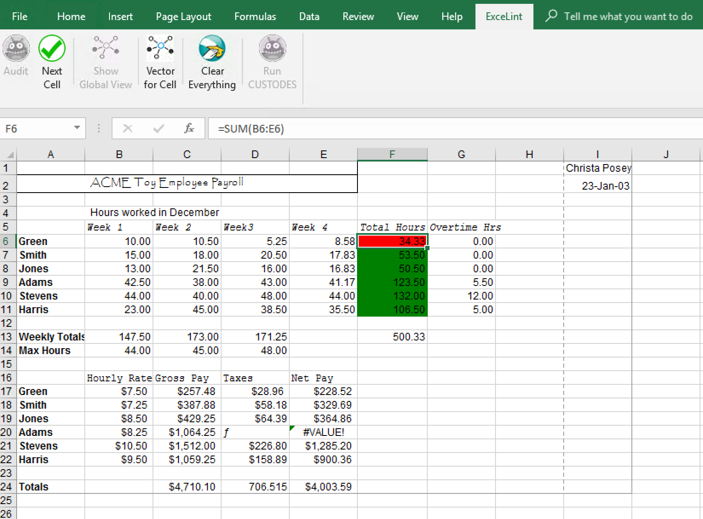

OOPSLA 2018 Artifact Evaluation Getting Started Guide for ExceLint
Glossary
| term |
meaning |
| ExceLint |
ExceLint is a static analysis that finds formula errors in spreadsheets. |
| ExceLint UI |
The ExceLint UI is an implementation of the ExceLint analysis, written as a plugin for Microsoft Excel on Windows. |
| ExceLint benchmark runner |
The ExceLint runner is a command-line batch scripting tool that runs Excel in the background, feeding it a set of files and ground truth annotations supplied by the user. The output of the tool is a CSV containing benchmark statistics that you can use to compare against the paper. |
| Workbook |
An Excel file is called a workbook. Workbooks usually end in .xls or .xlsx |
| Worksheet |
An Excel workbook usually contains many spreadsheets; each spreadsheet is called a worksheet. You can navigate worksheets in Excel by using the tabs on the bottom left of the workbook. |
| Ribbon |
The ribbon is a user interface component that groups buttons together. Buttons are grouped by function and organized by function, with that function's name appearing in the tabs at the top of the ribbon. The ribbon is usually found at the top of a workbook, just under the Excel window's title bar. |
| Formula |
A formula is an Excel expression. All Excel formulas are purely functional. Every formula is prefixed by a = character. |
| Reference |
A reference in Excel is a syntactic construct that indicates where another cell's value should be substitued into a formula during evaluation. For example, the formula =A1+A2 means that the values stored in cells A1 and A2 should be substituted into the expression where A1 and A2 occur, respectively, when the formula is evaluated. |
| Reference shape |
Two formulas are reference equivalent if they refer to the same cell offsets, relative to the position of the formula itself. Such formulas are said to have the same reference shape. Refer to the definition of reference equivalence on page 4 of our paper for further elaboration. |
| Vector fingerprint |
Each reference in a formula induces a reference vector, which is a vector encoding of the reference relative to the location of the formula itself. Since a formula may have multiple refernces, it induces a set of vectors. For performance reasons, ExceLint "compresses" this set of vectors into a single vector, called the vector fingerprint. See section 4.1.1. on page 10 of the paper for further elaboration. |
| Formula error |
A formula error is a formula that deviates from the intended reference shape by either including an extra reference, omitting a reference, or misreferencing data. We also include manifestly wrong calculations in this category, such as choosing the wrong operation. See the Evaluation section of the paper for more details. |
Table of Contents
Overview
ExceLint is a static analysis that finds formula errors in spreadsheets.
In order to fully evaluate ExceLint, you will need to install the ExceLint UI plugin on a Windows machine that has a copy of Office 2016. This guide provides an installation walkthrough as well as instructions for running the tool. You can run the tool as a plugin using Excel, or using the benchmark runner which will reproduce the results from the paper. Finally, a post-processing script is supplied that will produce charts similar to those found in the paper.
We tested ExceLint using Windows 10/Windows Server 2016 and Excel 2016. While ExceLint works in principle with other versions of Windows and Excel (e.g., Excel 2010/2013), we have not tested these alternative configurations and do not recommend using them.
Paper
We include our original paper submission for the committee's reference. The OOPSLA PC pointed out a number of areas where our paper could use improvement, so we provide author responses to help clarify things. We will address all of these concerns in the final draft.
See the paper/ directory in the excelint_data_files.zip archive (see below).
Software Needed:
- Microsoft Remote Desktop client installed on your local machine
- Microsoft Office 365 (2016):
- Java (in order to run CUSTODES tool; we used Java 8 Update 171; we chose the "Windows Offline 64-bit" version): https://java.com/en/download/manual.jsp
- R Programming Language (to run post-processing script; we used v3.5.0 for Windows): http://cran.mirrors.hoobly.com/
- (optionally) Mozilla Firefox for Windows: https://getfirefox.com
- (optionally) ExceLint source code (see
OOPSLA-AEC branch): https://github.com/ExceLint/ExceLint
- (optionally) Visual Studio 2017: (we used the Professional edition; Community may also work) https://visualstudio.microsoft.com/vs/whatsnew/
ExceLint Data Files
The excelint_data_files.zip archive contains the following:
| name |
purpose |
artifact/ExceLintInstaller.exe |
This is an InstallShield program that will install ExceLint on a Windows computer. |
benchmarks/ |
This is the suite of benchmark files we used to evaluate ExceLint and CUSTODES. These files come from the CUSTODES group, and were originally drawn from the EUSES benchmark suite. NOTE: The EUSES Consortium expressly prohibits redistribution without prior consent; these files are supplied for AEC evaluation purposes only. Please do not redistribute. |
case_study/Public_debt-ratios_advanced-summary.xlsx |
This is the summary sheet from the Reinhart-Rogoff study "Growth in a Time of Debt". We obtained this spreadsheet directly from the authors and do not have permission to redistribute. Please do not redistribute. |
custodes/ |
This folder contains the CUSTODES implementation. You can run it by cd'ing to this directory and running java -jar cc2.jar. |
ground_truth/ |
This folder contains two ground truth annotations. |
ground_truth/annotations.csv |
This file contains annotations collected by a manual audit of the CUSTODES benchmarks by the ExceLint authors. The purpose of this audit was to find formula errors. The annotation format is described in the file ExceLintFileFormats/BugKind.cs file and is readable using the ExceLintFileFormats library. Note that of the numerous bug classes in this file, we only consider ReferenceBug (ref), ReferenceBugInverse (refi), and CalculationError (calc) to be "formula errors." ref means that a formula makes a reference error; if the formula is part of a larger set of formulas, and the formula is inconsistent with that set, those other formulas will be marked refi. calc means that the formula calculates the wrong value. See the paper for details on how we count errors ("Bug Duals"). |
ground_truth/smell_detection_result.csv |
This file contains annotations collected by a manual audit of the CUSTODES benchmarks by the CUSTODES authors. The purpose of this audit was to find smells. The annotation format is described in the file ExceLintFileFormats/CUSTODESGroundTruth.cs file and is readable using the ExceLintFileFormats library. |
getting_started/getting_started.html |
Getting Started guide. |
paper/ |
The submitted paper and author response. |
post-processing/charts.R |
This file is an R script that reads the excelint_output.csv file produced by the ExceLint benchmark runner tool and produces plots like those seen in the paper. See below for usage instructions. |
Installation
You may either install ExceLint on your own Windows machine if you have one available, or you may follow the instructions below for obtaining an Azure virtual machine and installing ExceLint in a VM. Note that we provide a preconfigured, prepaid Azure VM for the committee's use in case reviewers encounter difficulty setting up their environments (see "Preconfigured Azure Instance" section below).
Minimally, you will need working copies of Windows, Office 2016, and you will need to install ExceLint and extract its benchmarks to your disk.
If you run into trouble installing ExceLint on your personal machine, we suggest running the tool in Azure instead, since we have tested this environment. Below a certain usage threshold, Azure is free of charge, but you will need a credit card to register either way.
Setup instructions are as follows:
Azure Installation Instructions:
- Create a (free) Azure account if you do not already have one at https://azure.com
- Go to https://portal.azure.com/
- Click the
Create a resource button in the upper left of the screen.
- Click the
Windows Server 2016 VM button (or search if it is not on the main screen)
- In the name field, type:
ExceLintVM
- Leave the
VM disk type" as "SSD.
- Enter a
username of your choosing
- Enter a
password of your choosing
- Under
Subscription, select Pay-As-You-Go
- Under
Resource group, select Create new and enter a name of your choosing in the text field.
- Under
Location, choose a location near you.
- Under
Already have a Windows license? choose No
- Click
OK
- We recommend the
D4s_v3 machine type; select D4s_v3 and click the Select button (this VM costs $0.096/hour)
- Under
Settings, find the Select public inbound ports and select RDP (3389) from the drop-down menu.
- You are now shown a summary of the VM's settings. Click
Create to start the VM.
- Once the VM starts, you will see a dashboard for the VM. Click the
Connect button, select RDP, and click Download RDP File to download an RDP connection file. You will need a locally-installed copy of Microsoft Remote Desktop in order to connect.
- Open the RDP file, which should launch Microsoft Remote Desktop. If you are using Remmina or other third party client, refer to your documentation on how to open an RDP file.
- If you are presented with a certificate to approve (usually on Mac),
- (on Mac) Click
Show Certificate
- (on Mac) Click
Always trust ...
- (on Mac) Click
Continue
- You may need to reenter your username and password (that you entered above) to login to the VM
- Open Internet Explorer.
- We suggest that you first download Mozilla Firefox; Internet Explorer's security settings by default are very restrictive and will make further downloads annoying.
- Now launch Firefox and download the following:
- Download and run the Microsoft Office installer.
- Download and run the Java installer.
- Download and run the R Programming Language installer.
- Download the ExceLint data files and extract them. Right click on
excelint_data_files.zip, select Extract All..., click the Browse... button and navigate to the place you want to save them (e.g., Desktop), and click the Extract button.
- Run the ExceLint installer in
artifact/ExceLintInstaller.exe
- All of ExceLint tools and benchmarks should now be installed.
Preconfigured Azure Instance
If you would like to use a preconfigured installation of ExceLint, direct your Remote Desktop client to:
| Field |
Value |
| IP: |
23.96.20.176 |
| Username: |
dbarowy |
| Password |
OOPSLA2018!!!! |
You will likely need to accept a certificate when you login.
Reviewers should coordinate their use of this instance since we are only making one available to the committee.
Note that we provide this VM for the convenience of the committee, but please be cognizant of the fact that we are paying for its use (i.e., CPU time) out of our own research grant money. Careless use may incur unnecessary expense. We ask that you limit your use of this resource to legitimate reviewing tasks for this artifact submission.
A Short ExceLint UI Tutorial
- Launch
Excel.
- Click
Open Other Workbooks
- Select an Excel file (workbook) of your choosing. A good first demonstration is the benchmark file
act3_lab23_posey.xls, which is small enough to examine fully.
- After opening your workbook, look for the
ExceLint tab in the Excel ribbon. If this is the only Excel plugin you have installed, it will be the rightmost tab in the ribbon. Click on the ExceLint tab.
Note: You may want to refer to the Troubleshooting section below as Excel's security mechanisms sometimes prevent the ExceLint user interface from running; we detail solutions for common problems in that section.
Proposed Fix Tool (step-by-step audit)
- To ask ExceLint for a step-by-step guided audit, click the
Audit  button.
button.
- After a brief analysis delay (you should see a progress bar), ExceLint will highlight a suspected formula error, if it locates one.
- Two groups of cells are highlighted: the suspected error in red, and a group of closely related formulas in green.

- You should interpret this display as suggesting a "proposed fix." The visualization is suggesting that the cell(s) highlighted in red should be rewritten to have the same reference shape (see glossary) as the the cells(s) highlighted in green.
- To see Excel's formula view, press
Ctrl-`
- To obtain the next error candidate, click the
Next Cell  button.
button.
- To stop the audit, click the
Clear Everything button.
Note that the tool currently does not make any provisions for users changing (e.g., fixing) cells while an audit is in progress. Such changes will not be reflected in the analysis unless it is re-run.
The benchmark suite evaluates the effectiveness and speed of the proposed fix tool assuming that a user investigates every proposed fix. See "Running ExceLint Benchmarks" below. Note that for usability purposes, ExceLint only displays the analysis results for the current worksheet. We found that audits that jumped from sheet to sheet were confusing. By contrast, the benchmark runner conducts a whole-workbook analysis.
Global view
The global view provides a global visualization of all the regions of the current worksheet. Click the Show Global View button to see the visualization. Click Hide Global View to clear the visualization.
You should interpret each contiguous region of cells having the same color as having the same reference shape. Note that to cut down on visual clutter, the coloring algorithm does not assign colors to whitespace or strings, and all numeric data is given the same color.
Our preferred manner of working with ExceLint is to switch between the Proposed Fix Tool and the Global View. The Proposed Fix Tool quickly identifies potential problems while the Global View provides context that sometimes helps determine whether a flagged cell is truly a bug.
Vector Tool
You can ask ExceLint to show you the vector fingerprint (see glossary) for the currently selected cell. Select a cell in the spreadsheet and then click the Vector for Cell button. Note that all cells, including strings and whitespace, have a fingerprint. The fields of the vector shown are:
where x, y, and z are the column, row, and worksheet index (in a lexicographical ordering of worksheet names) of the selected cell and where dx, dy, and dz are the resultant of the set of induced reference vectors. c indicates the type of the cell if it is a value. See section 3.1 on page 4 of the paper.
Note that the form of the fingerprint used most widely in ExceLint is the "location-free" variant that omits x, y, and z. This is the form described in the paper.
CUSTODES
We built a UI for CUSTODES to make side-by-side comparisons with ExceLint easier. CUSTODES is a command-line tool that produces a list of cells to audit. We provide an adaptation of ExceLint's UI that highlights the cells flagged by CUSTODES.
To run CUSTODES, click on the Run CUSTODES button. Note that the ExceLint UI will run CUSTODES in a command prompt window, collect the output, and then display it in Excel. Since we do not have access to CUSTODES internals, we were not able to provide a progress bar. Please be patient and wait until the CUSTODES analysis is finished.
When you are done looking at CUSTODES outputs, click the Clear Everything button.
Running ExceLint Benchmarks
The benchmark runner command line tool is located in the ExceLint install directory. If you accepted the defaults for the ExceLint installer, programs should be installed in C:\Program Files (x86)\williams.edu\ExceLint\.
Running the benchmark suite takes roughly 1 hour, 15 minutes using the specified Azure VM instance.
- Open the Windows command prompt (
cmd.exe)
- Type
cd C:\Program Files (x86)\williams.edu\ExceLint\
- To see the benchmark runner's command-line options, run
ExceLintRunner.exe without any arguments. Note that the runner supports a much larger set of analyses than the analysis described in the paper. Most of these analyses were "dead ends". Since we have stopped maintaining these, you may find that the tool crashes or behaves strangely if you select them, although you are free to explore them if you wish.
- The following invocation works for us. You will need to adjust for your own local paths (e.g., replace
dbarowy). Note that we extracted excelint_data_files.zip to the Desktop.
ExceLintRunner.exe ^
"C:\Users\dbarowy\Desktop\excelint_data_files\benchmarks" ^
"C:\Users\dbarowy\Desktop\excelint_output" ^
"C:\Users\dbarowy\Desktop\excelint_data_files\ground_truth\annotations.csv" ^
"C:\Users\dbarowy\Desktop\excelint_data_files\ground_truth\smell_detection_result.csv" ^
"C:\Program Files\Java\jre1.8.0_171\bin\java.exe" ^
"C:\Users\dbarowy\Desktop\excelint_data_files\custodes\cc2.jar" ^
-cluster -noshuffle
- Using the command invocation above, there will be a folder called
excelint_output/ on the Desktop. Inside this folder are many outputs, most importantly, a file called excelint_output.csv, which you will use as input to the post-processing script.
Post-processing script
We supply a post-processing script in the post-processing/ folder that computes all of the statistics and plots shown in the paper. To run this, you will need the R programming language runtime installed (see link above).
Installing R and R packages
After installing the R programming language runtime for Windows, you will need to install several R packages:
- Using the Windows command prompt (
cmd.exe), type: "C:\Program Files\R\R-3.5.0\bin\R.exe"
- At the prompt, type:
install.packages(c("ggplot2","dplyr","devtools","reshape"))
- Follow the prompts to choose a download mirror (any will do).
- When you are asked if you want to save the workspace image, enter
n.
- Enter
q() to quit.
Running the script
Using the Windows command prompt (cmd.exe), cd to your excelint_data_files\post-processing folder.
E.g.,
cd C:\Users\dbarowy\Desktop\excelint_data_files\post-processing
Run the R script, supplying the location of the excelint_output.csv file you generated earlier.
E.g.,
"C:\Program Files\R\R-3.5.0\bin\Rscript.exe" charts.R "C:\Users\dbarowy\Desktop\excelint_output\excelint_output.csv"
The script will print out some package management information, and then it will compute and print a set of statistics like the following:
OVERALL STATS:
Number of benchmarks: 70
Total number of cells: 110091
Total number of formulas: 25554
Total number of formula errors: 397
Total number of smells: 1952
FORMULA ERRORS:
ExceLint: Total formula error true positives (TP): 89
ExceLint: Total formula error false positives (FP): 223
ExceLint: Formula error mean precision: 64.18 %
ExceLint: Formula error mean recall: 62.1 %
ExceLint: Formula error mean precision (adj): 63.79 %
ExceLint: # benchmarks nothing flagged: 34
ExceLint: # benchmarks nothing flagged because there were no errors: 23
CUSTODES: Total formula error true positives (TP): 52
CUSTODES: Total formula error false positives (FP): 1816
CUSTODES: Formula error mean precision: 20.38 %
CUSTODES: Formula error mean recall: 61.24 %
CUSTODES: Formula error mean precision (adj): 19.6 %
CUSTODES: # benchmarks nothing flagged: 8
CUSTODES: # benchmarks nothing flagged because there were no errors: 5
RUN TIME:
ExceLint: mean run time in ms: 21834.17
ExceLint: median run time in ms: 7948.5
CUSTODES: mean run time in ms: 27945.06
CUSTODES: median run time in ms: 5573
SMELLS:
ExceLint: Total smells true positives (TP): 60
ExceLint: Total smells false positives (FP): 266
ExceLint: Smells mean precision: 61.07 %
ExceLint: Smells mean recall: 18.68 %
The script also produces a set of PDF plots in the current working directory. If you installed Mozilla Firefox, plots can be viewed by right-clicking on the file, selecting Open With, then selecting More Apps, and then selecting Mozilla Firefox from the list.
Comparing the tool's output to the paper
Relevant Figures
- Figure 1 shows the spreadsheet
act3_lab23_posey.xls. Run an audit (click the Audit button); the highlight shown in the figure is the first error highlighted by the tool.
- Figure 2 shows the spreadsheet
act3_lab23_posey.xls. Show the Global View (click the Show Global View button); the regions shown should be the same as the excerpt shown in the paper. The colors themselves may be different because we fixed a bug in the coloring algorithm after we submitted the paper.
- Figure 5a; same spreadsheet as Figure 2.
- Figure 5b shows ExceLint highlighting a missing formula. This figure was inadvertently left in the paper from an earlier version (see "Paper Errata" below).
- Figure 6 shows the spreadsheet
01sumat.xls. Open the spreadsheet and go to sheet PM2.5 and run an audit (click the Audit button); the first highlight shown is cell J30. If you view this spreadsheet using Excel's "formula view" (Ctrl-`) you will see that the reference in J30 inadvertently excludes cell J7.
Numbers
- Results for RQ1 on p. 15 can be checked by examining the output of the post-processing script (above). They are: mean and median precision and recall for ExceLint and CUSTODES.
- The precision/recall boxplot from the paper on page 16 is reproduced by the post-processing script. See the file
precision_recall_plot.pdf.
- The performance boxplot from the paper on page 16 is reproduced by the post-processing script. See the file
performance_plot.pdf.
- The adjusted mean precision numbers on page 16 can be found in the post-processing output marked
(adj).
- In the section named "High precision when doing nothing" on page 17, the counts can be found in the post-processing output marked
# benchmarks nothing flagged.
- Results for RQ2 on page 17 can be found in the
RUN TIME section of the post-processing output.
Case Study
The case study spreadsheet can be found in the case_study/ folder. To reproduce the highlight, run an audit (click the Audit button). The highlight shown in the paper is the second (of two) errors found. Both errors make the same mistake. The cells highlighted in red are actually correct, because most of the spreadsheet is wrong and ExceLint finds the inconsistency.
Paper Errata
We inadvertently dropped two benchmarks from our results due to a bug in our benchmark runner and an accidental miscount. There are 70 benchmarks in total (not 68, as we report in the paper). This mistake had a small effect on most of the numbers reported in the paper. The correct numbers are shown above in the section titled "Post-processing script".
Note that the example described in Figure 5b (page 12; also text in section 4.2.2 on page 13) is from an old version of ExceLint and no longer works as described (i.e., ExceLint no longer flags "missing formulas" since they are not unambiguously errors). We mistakenly left this old example in our submission. If you would like to reproduce the old behavior, comment out line 444 in the file ExceLint/EntropyModelBuilder2.fs, which is
|> Array.filter (fun (_,_,t) -> ClusterIsFormulaValued t ih graph)
and recompile using the instructions in the "Source Code" section below.
Note that the example described in the introduction (Fig 1., page 2) works as described.
Source Code
You may download the source code for ExceLint using git. ExceLint is a Visual Studio 2017 solution.
We have produced an OOPSLA-AEC branch in the ExceLint repository that provides a stable branch for the committee's evaluation purposes.
Run:
$ git clone --recursive https://github.com/ExceLint/ExceLint.git
After cloning, checkout the OOPSLA-AEC branch:
$ git checkout OOPSLA-AEC
We do a --recursive checkout above because ExceLint depends on a number of subprojects developed by our group. The following table describes the libraries used by ExceLint in the ExceLint solution.
| library |
purpose |
language |
AnnotationStats |
A console program that prints statistics about the ground truth annotations |
F# |
COMWrapper |
A wrapper that ensures that reference-counted Excel COM objects are correctly disposed of by managed (.NET) code. |
C# |
COMWrapperTests |
A unit test suite for COMWrapper. |
C# |
CUSTODESParser |
A parser for CUSTODES tool outputs. |
F# |
Depends |
A library that efficiently extracts a spreadsheet's dependence graph. |
C# |
DependsTests |
A unit test suite for Depends |
C# |
ExceLint |
This library contains the core static analysis. |
F# |
ExceLintCLIGenerator |
A defunct UI used during development to make it easy to call the benchmark runner |
C# |
ExceLintFileFormats |
A library that defines file formats needed by the ExceLint runner to read input files and to produce output files. |
C# |
ExceLintInstaller |
An InstallShield project used to produce the release installer used for this project. |
InstallShield |
ExceLintRunner |
A console program used to run ExceLint in benchmark mode. |
F# |
ExceLintRunnerTests |
A unit test suite for ExceLintRunner |
C# |
ExceLintTests |
A unit test suite for ExceLint |
C# |
ExceLintUI |
This library is the top-level project that produces a plugin for Microsoft Excel. It is implemented using the Visual Studio Tools for Office (VSTO) API. The ExceLint UI manages the UI layer, mostly forwarding calls to the ExceLint library. |
C# |
ExcelParser |
A parser that produces ASTs for Excel formulas. |
F# |
ExcelParserConsole |
A console program that displays the AST for a given Excel formula |
F# |
FParsec |
A third-party parser combinator library. |
F# |
FParsecCS |
Low-level routines for FParsec |
C# |
ParcelCOMShim |
A library that facilitates calling ExcelParser on Excel COM types |
F# |
ParcelTest |
Unit test suite for ExcelParser |
C# |
StatsGatherer |
A console program that crawls a collection of Excel workbooks and gathers statistics about them |
F# |
Building and Running ExceLint from Source
You will need an installed copy of Microsoft Visual Studio 2017 in order to build ExceLint.
- Open the
ExceLint.sln file using Visual Studio.
- Right-click on the
ExceLintUI project in the Solution Explorer pane and select Set as StartUp Project.
- Select the
Debug -> Start Debugging option from the menu. This will compile ExceLint, install the VSTO plugin into Excel, and start Excel in a debugging session. You can set breakpoints in Visual Studio, which may be triggered by interacting with the plugin.
Troubleshooting
A variety of problems can occasionally pop up when using or building ExceLint.
Problem: ExceLint does nothing when I click on the buttons in the UI.
Solution: Excel will not allow ExceLint to run when it is in "Protected Mode". If it is, there will be a yellow bar across the top of the spreadsheet to that effect. You will need to click the Enable Editing button to allow ExceLint to run.
Problem: You started the ExceLint runner but had to force quit it using Ctrl-C. Now there are a bunch of excel.exe instances running in the background.
Solution: You can force quit all running instances of Excel by typing taskkill /f /im excel.exe into the cmd.exe command prompt.
Problem: The Clear Everything button does not clear everything.
Solution: We occasionally find and try to squash bugs where the UI is out of sync with the analysis. We may have missed a corner case or two. If you find that you cannot clear visualizations, close the reopen the workbook without saving the workbook. It is important that you do not save the workbook when you close it, otherwise the visualizations themselves will overwrite the default formatting in the workbook!
Problem: Excel reported that it was "running into problems with the 'excelint' add-on", asked me if I wanted to disable it and I clicked Yes. Now ExceLint has disappeared from the ribbon menu in Excel.
Solution: This is a "feature" of Excel: it disables plugins that cause Excel to crash. Unfortunately, it also interprets halting the program using the debugging tools as a "crash." You can re-enable ExceLint by completing the following steps:
- Open a file in Excel (any file).
- Click the
File menu.
- Click the
Options button on the bottom left of the screen.
- Click the
Add-Ins option in the menu that appears.
- You should see
ExceLint under the heading Disabled Application Add-Ins list (you may have to scroll down).
- In the
Manage drop down, select COM Add-Ins and click the Go... button.
- Check the unchecked
ExceLint checkbox and click the OK button.
ExceLint should now appear in the Ribbon. If it does not, perform the next steps.- Again, click
File, click Options, select Add-Ins.
- In the
Manage drop down, select Disabled Items and click the Go... button.
- In the menu that appears, select
ExceLint and click the Enable button, then repeat steps 1-7.
- If ExceLint still does not re-appear, uninstall ExceLint, delete the direcotry
C:\Program Files (x86)\williams.edu, log out of the user account, log back in, and reinstall ExceLint using the installer.
- If that does not work, contact the authors for additional support.